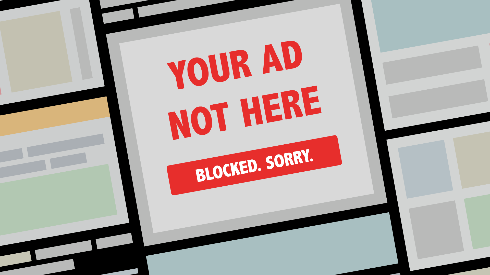
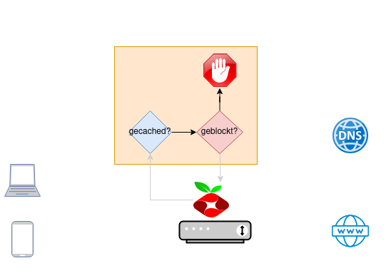
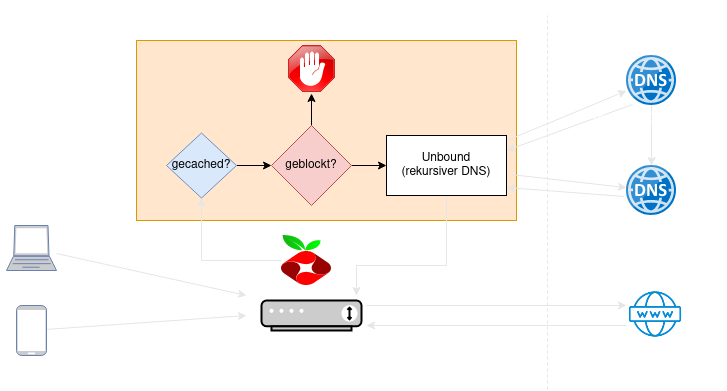

AdBlocking mit
Werbefreies Heimnetzwerk mit dem RaspberryPi
StuRa
$ tree
contents
├── 1_uber_uns.txt
├── adtracking
│ ├── 2_tracking_pixel.txt
│ └── 3_real_time_bidding.txt
├── pi_hole
│ ├── 4_allgemein.txt
│ ├── 5_about_dns.txt
│ └── 5_tech_demo.txt
├── 6_fazit.txt
└── 7_quellen.txt
Wer sind wir?
AG Link
AG für kritische Informatik an der Uni Leipzig
- [Plenum] Mittwochs 19:00 Uhr
- [Web] https://ag-link.xyz
- [Mail] ag-link@riseup.net
- [Matrix] #ag-link:ag-link.xyz
🍪 Cookies

Tracking Pixel
Tracking Pixel
Tracking Pixel
- 1x1 Pixel großes Bild im Code der Webseite (E-Mail).
- Registriert Nutzerverhalten
- Gebunden an eine Aktion
Klassisch ist dies ein einfaches HTML Tag:
Gesammelt werden:
- IP Adresse (Liefert Informationen zu eurem ISP)
- Browser (Chrome, Firefox, etc.)
- Geräte Typ (Mobile, Desktop, Tablet)
- Betriebssystem (iOS, Android, Windows, etc.)
- Bildschirmgröße
- Referrer (Von wo aus ihr auf die Seite gelangt seit)
Das Ergebnis:
- Nachvollziehbares Verhalten sog. "conversions"
- Beavioural retargeting
- Cross-site tracking
- Insights und Metriken für BetreiberInnen
- Mehr Daten für Werbeplattformen
Und was springt für uns dabei raus?
- * Personalisierte Werbeerfahrung.
- * Gezieltere Anzeigen führen häufiger zu Käufen.
- * Bessere generelle Nutzererfahrung durch Optimierung der Webseiten

Real Time Bidding (RTB)
Vokabular
- DSP: Demand Side Platform
- SSP: Supply Side Platform

Wichtige Organisationen
- Interactive Advertising Bureau (IAB)
- OpenRTB
- Authorized Buyers Framework
Bid Request
- Request ID
- IP Adresse (im Falle von ABF nur die ersten 3 Bytes)
- Cookie IDs
- User-Agent (Identifiziert den Browser und das Gerät)
- Ort
- Zeitzone
- Systemsprache
- Informationen zur Konsumentengruppe
IAB Inhalts-taxonomie
- Herzkrankheiten
- Psychische Gesundheit
- Sexuelle Gesundheit
- Ansteckende Krankheiten
- uvm.
Google 'publisher verticals'
- Reproductive Health
- Substance Abuse
- Health Condition
- Politics
- Ethnis & Identity Groups
- uvm.
- [0.00s] J. öffnet eine URL und der Browser beginnt den Inhalt der Webseite zu laden
- [0.04s] Die Webseite fragt die Werbebörse an
- [0.08s] Die Werbebörse stellt einen Ad Request an mehrere DSPs
- [0.10s] Die Werbebörse sendet jeder DSP J. Profil und die Webseitenkategorie
- [0.12s] Jede DSP reichert (wenn möglich) J. Profil weiter an
- [0.125s] Jede DSP berechnet den optimalen Einsatz für den Werbetreibenden
- [0.13s] Jede DSP meldet den gesetzten Preis an die Werbebörse zurück
- [0.14s] Die Börse bestimmt den Gewinner aus den DSP Antworten
- [0.18s] Die Werbebörse sendet den Preis und die Anzeige an den Ad-Server der Webseite
- [0.19s] Der Ad-Server gibt dem Browser vor, welche Werbung er darstellen soll
- [0.23s] Der Ad-Server sendet die Werbung an den Browser
- [0.31s] Browser stellt Werbung des Auktionsgewinners dar und signalisiert der siegreichen DSP das die Werbung gesehen worden ist
Why bother?
- Vereinfachen von Manipulation
- Energieverbrauch v. Werbenetzwerken
- ...
https://www.sciencedirect.com/science/article/pii/S0195925517303505
Ad Blocking
Quelle: http://marketingland.com/wp-content/ml-loads/2015/09/ad-blocked3-ss-1920.png
Browser plugins
- Einfach einzurichten
- Beschränkt auf jeweil. Browser
- Nicht überall verfügbar (Smart TV, Innerhalb von Apps)
- Langweilig
PiHole
Quelle: https://media.giphy.com/media/SVCSsoKU5v6ZJLk07n/giphy.gif
Was ist ein PiHole?
= DNS-Sinkhole
Quelle: https://hackaday.com/wp-content/uploads/2015/02/pibig.jpg
Was ist DNS?
Bild: https://www.sueddeutsche.de/image/sz.1.2720968/1200x675?v=1519611738
DNS im OSI-Modell
Bild: https://de.wikipedia.org/wiki/OSI-Modell#/media/Datei:ISO-OSI-7-Schichten-Modell(in_Deutsch).svg
Wo finde ich www.ag-link.xyz ?

Wo finde ich .xyz.ag-link.www ?
PiHole Setup
Features
- Schützt jedes Gerät im Netzwerk
- Blockt auch innerhalb von Apps
- Verbessert Performance
- Blockt auch Malware
- Listen sind beliebig erweiterbar
- Monitoring
Probleme mit DNS
- DNS-Spoofing
- DNS-Hijacking
- Unser DNS kennt unsere Surfhistorie
PiHole mit Unbound
Unbound = rekursiver DNS-Server zum selberhosten.
- mehr Privatsphäre
- erhöter Schutz vor DNS-Spoofing/Hijacking Angriffen
- Erstmalige Aufrufe neuer Adressen haben eine kurze Verzögerung
PiHole mit Unbound
Logo: https://wp-cdn.pi-hole.net/wp-content/uploads/2018/12/pihole-text-logo-white.png.webp
Nachlesen und selber basteln:

[GitHub] ~ https://github.com/bedaka/kew-pihole
Quellen 1/2
- Netzpolitik 2017: https://netzpolitik.org/2017/wahlkampf-in-der-grauzone-die-parteien-das-microtargeting-und-die-transparenz/
- https://www.facebook.com/business/learn/facebook-ads-pixel
- https://targetleaks.de/index
- https://www.sciencedirect.com/science/article/pii/S0195925517303505
- Schnabel, Patrick: Netzwerktechnikk-Fibel
Quellen 2/2
- Update report into adtech real time bidding; ICO
- Selling Off Privacy at Auction; Lukasz Olejnik, Minh-Dung Tran, Claude Castelluccia
- To bid or not to bid? - Measuring the value of privacy in RTB; Lukasz Olejnik, Claude Castelluccia
- Blocklisten für "Pegasus": https://www.youtube.com/watch?v=uk1Z7kshxPA